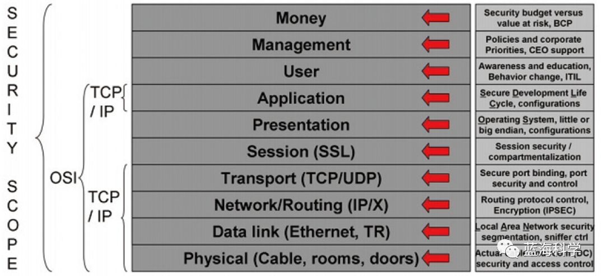
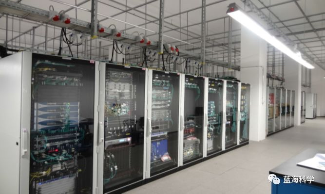
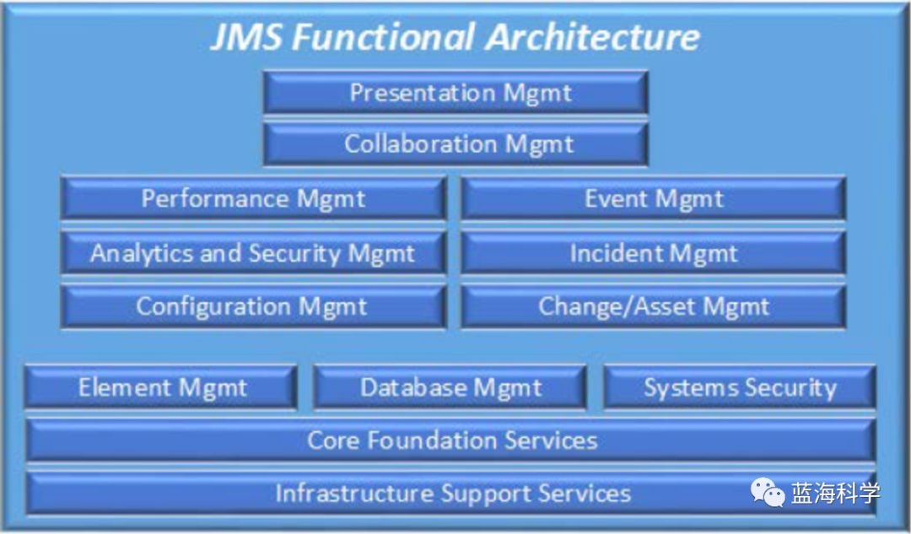
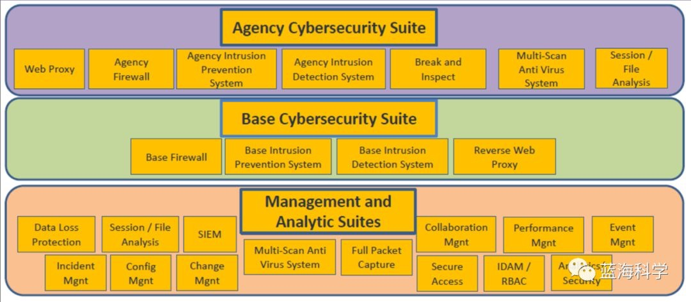
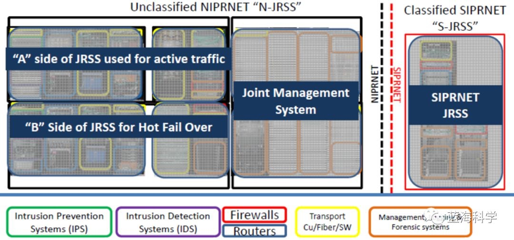
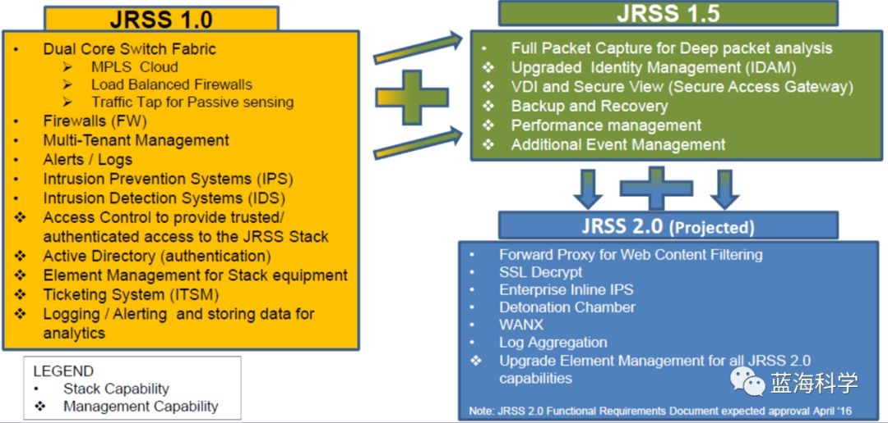
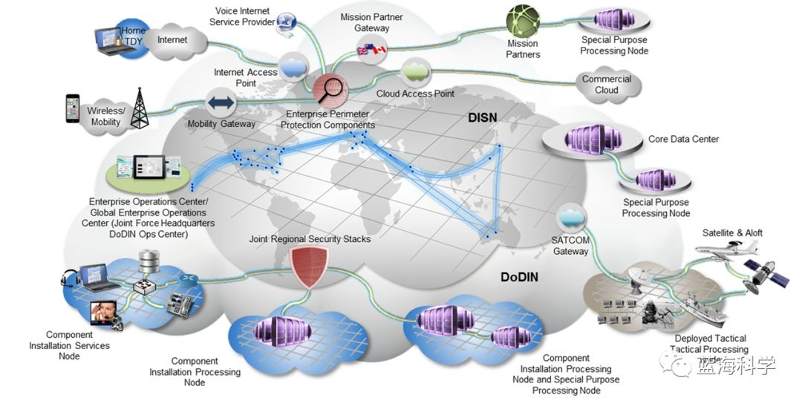
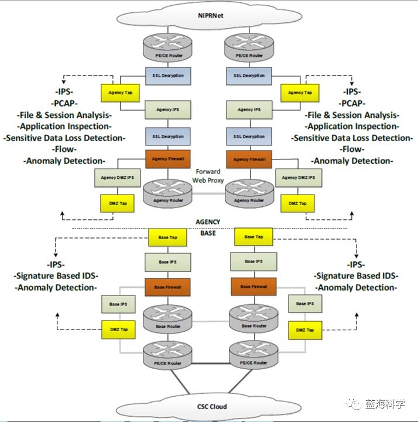
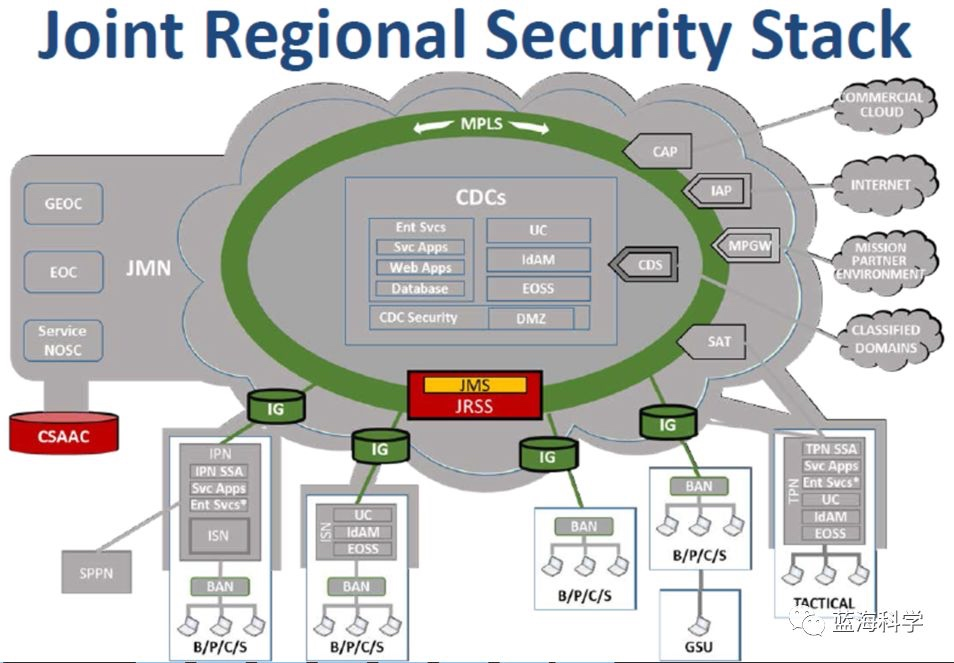
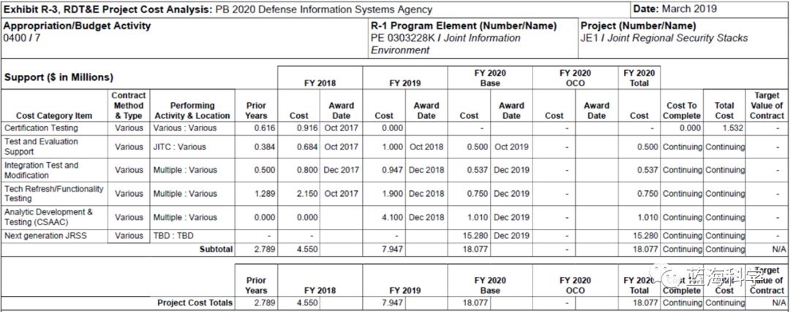

原文：https://mp.weixin.qq.com/s/WHBz9k3zInoGn6v-kv2-Kw
一、前期回顾
“美军网络安全”系列第一篇（美军网络安全 | 开篇： JIE （联合信息环境）概述）介绍了美军 JIE （联合信息环境）的总体情况。其主要目标是实现“三个任意”的愿景——美军作战人员能够基于任意设备、在任意时间、在全球范围的任意地方获取所需信息，以满足联合作战的需求。
JIE 的 9 大关键领域如下（通过合并 JIE 的 6 项关键能力和 8 个现代化领域）：1）网络现代化（网络规范化）；2）网络安全体系架构（单一安全架构-SSA/CCA）；3）身份和访问管理（IdAM）；4）企业运营；5）企业服务；6）云计算；7）数据中心整合；8）任务伙伴环境（MPE）；9）移动性。
本系列第二篇（美军网络安全 | 第 2 篇：JIE 网络安全架构 SSA （单一安全架构））介绍了其中第 2 项：网络安全体系架构，即单一安全架构（SSA/CCA），主要是从安全思想和理念层面描述。
这一篇（即第 3 篇），将从更落地的层面，继续介绍网络安全体系架构的落地架构 JRSS （联合区域安全栈）。
二、JRSS（联合区域安全栈）背景
上一篇介绍过的 SSA （单一安全框架）是一个整合网络防御的安全集成框架，其设计目标是在需要执行网络防御作战的任何时间段内实现 JIE 网络的积极防御。SSA 通过缩减网络攻击面，集成独特的部由算法，优化网络响应时间和同步复杂度，使得需要部署安全设备的数目大大降低，实现最大化作战效率。
JRSS （联合区域安全栈）是 SSA 的重要组成部分和贯彻实施形式，也是美军国防部网络和安全能力现代化的重要支撑手段。
为了切实贯彻和推进 SSA 的实施，美陆军在整合升级网络、加强网络防御的同时首先开发了 JRSS。作为陆军网络现代化工作的一部分，JRSS 将解决各军种网络安全框架间的差别问题，为美军国防部网络安全建立标准统一的网络安全框架支撑设施，未来将作为美军国防部网络的中枢神经点，连接数百万的用户，确保通用安全能力的输出，实现全军网络间的透明化，快速应对新兴网络威胁。
三、JRSS 概念和思路
JRSS 概念：JRSS 由一系列相辅相成的安全站点、设备和机制构成。JRSS是一套执行防火墙功能、入侵检测和防御、企业管理、虚拟路由和转发（VRF）并提供大量网络安全功能的设备。
JRSS 理论依据：攻击面控制是 JRSS 的理论基础，JRSS 的目标在很大程度上是为了响应SSA中“缩减攻击面”的要求。
区域化思路：在 SSA 规范下，美军将全球基地划分为若干个区域，每个区域对应一个 JRSS。
本地架构 -> 区域架构：通过部署 JRSS ，网络的安全性被集中到区域架构中，而不是每个军事基地、哨所、营地或站点的本地分布式架构中。
本地堆栈 -> 区域堆栈：DISA 正在将陆军现有的全球边界安全基础设施，从数百个本地安全堆栈集中到一个 JRSS 结构中。空军已经开始使用 JRSS 结构来保护其基础设施，海军正计划迁移其例外网络，作为使用 JRSS 保护其基础设施的第一步。
四、何谓“安全栈”
JRSS 旨在将网络安全集中化和标准化到区域架构中，而非每个军事基地、哨所、营地或工作站的不同成熟度和生命周期的不同阶段的非标准化架构。
何谓“栈”（Stack）：因为 JRSS 贯彻了层次化的安全防护思想，如同 OSI 或 TCP/IP 协议栈划分为若干功能层次。安全栈在通信的每个层次都描述了安全的控制点和需要进行的工作，以此对安全手段进行清晰的分类和精细化设计，如下图所示。JRSS 功能覆盖了 TCP/IP 的多个安全栈层次，能够在数据链路层、网络层、传输层和应用层并行开展实施。
攻击面控制是 JRSS 的理论基础，JRSS 的构建目标在很大程度上是为了响应 SSA 中“缩减攻击面”的要求。

五、JRSS 构成
每一个 JRSS 站点都包括支撑防火墙、入侵检测和防护、虚拟路由和转发、大数据分析处理和其它安全能力（如审计）等功能的软硬件设备。
从整体上看， JRSS 分为两类能力：栈能力 + 管理能力。
- JRSS设备架
每个 JRSS 都包括设备架（racks of equipment），允许国防部各部门获取、处理和分析大量网络数据。JRSS 设备架的物理形态如下图所示：

- 联合管理系统（JMS）
JMS 是 JRSS 的关键组成部分，是 JRSS 的管理上级。它为国防部信息网络（DoDIN）运营所需的网络安全服务提供了集中管理。
JMS 提供对网络传输和相关安全系统的可见性和控制。它能够监控和分析相关的故障和性能数据，以确定对当前运行和趋势分析的影响。这种集中化能力，允许对关键网络传输资产的策略、过程和配置进行标准化。
JMS 功能架构如下：

- JRSS 套件
JRSS 有非常明确的“套餐”思维。 JRSS 基本能力套件如下：
- 部级安全套件；
- 基地级安全套件；
- 管理和分析套件。

- 非密版和涉密版
当然，与上一篇所述 SSA 分为 NIPRNET 和 SIPRNET 版本一致， JRSS 肯定也是区分为 NIPRNET 非密版和 SIPRNET 涉密版的，如下图所示：

为何 SIPRNET-JRSS 比 NIPRNET-JRSS “轻”很多？请自行思考。提示：这与 SIPRNET 和 NIPRNET 的网络基础设施和安全基础条件有关。
- JRSS 版本演进

这张图反映了截止 2016 年的版本演进情况，而且只是 NIPRNET JRSS。实际上，期间还演进出 SIPRNET JRSS。
JRSS 部署
- 部署数量和位置
- JRSS 部署数量：美军将全球基地划分为若干个区域，每个区域对应一个 JRSS 。利用 JRSS，美军国防部预计减少现有的 1000多 个网络访问接口，替换为全球 50 个地点的 JRSS 站点。
- JRSS 部署位置：JRSS 部署在 DoD MPLS 网络的边缘处，包括 B/P/C/S 前哨站、DISA DECC（企业防御计算中心）以及 CDC（核心数据中心）等子网的接入处，对所有进出的流量进行检测和控制，以达到预设的安全目标。
- 区域化配置管理：JRSS 采用集中式的安全配置管理和标准化的安全工具、策略和行为，来取代之前各军种在基地、前沿阵地、指挥所等地实施的分散式配置管理和非标准化做法，从顶层角度统一负责各自区域内各军种的网络安全事务。
- 防失效部署模式：为防止因网络攻击或故障导致的失效，美军初期建立的部分 JRSS 节点之间进行了防失效的部署模式，如美国中西部的 St.Louis 和东北部的 Meade 节点即互为备份。
一图胜千言，下图表明了 JRSS 的部署位置，不仅有在 JIE 中的逻辑位置，还有在真实世界中的物理位置。其中，以世界地图为背景的蓝色圆点，就是一个个 JRSS 接入点。请大家自行数数共有多少个。

毫无疑问，此图的重要性与之前的 JIE 架构图有一拼。
- JRSS 套件的逻辑部署
下图展示了企业级 JRSS 和基地级 JRSS 套件的部署逻辑：

其中，带箭头的虚线表示流入 JMS 中的镜像流量。
- JRSS 部署计划
下图的信息量也比较大：

它反映了自 2014 财年开始实施 JRSS 直到最终目标实现的效果：
一方面增加 DoD 设施连接：从 0 个站点，到 400 多个站点；
另一方面减小攻击面：从 1000 多个松散的接入点，到 50 个牢固的接入点；
试想：还有什么比“既增加网络连接性，又减小网络攻击面”更好的结果呢！
七、JRSS 与 CSAAC（网络态势感知与分析能力）
从外延上讲，JRSS 包含了 CSAAC 。或者，可以更简单地概括为：
JRSS 价值主张 = 标准化安全架构 + 网络态势感知。

上图突出显示了 JRSS 和 CSAAC。
JRSS 主要负责：
- 筛查所有进出国防部设施的网络流量；
- 控制流量、传感器以识别和阻止未经授权的流量；
- 隔离网络入侵；
CSAAC 主要负责：
- 网络威胁签名监视列表；
- 筛查网络事务；
- 事故和事件监控；
- 任务影响分析；
八、JRSS 预算
美军的预算已经说明一切：JRSS 预算在 2018、2019、2020 财年分别为 455 万、795 万、 1800 万美元。

2020 财年预算之所以突然增高，是因为下一代 JRSS 的架构、试点和测试。 下一代 JRSS 是什么样子？还需进一步跟踪。
九、JRSS 启示
JRSS 是美军推进网络现代化和安全防护能力现代化的重要举措，体现了将攻击面理论与信息安全实践、网络效率提升相融合的思想。
从防御体系和关键技术的角度审视，JRSS 并无太大新意。但其实质上基于安全实用化思想，以打造“管用、好用”的安全能力为目标，有机结合通信、安全、管理领域的相关技术，在统一安全框架的指导下能够推进安全能力的深化发展。
- 整合至统一安全架构。在信息系统持续集成和整合的大背景下，JRSS 逐步实现各军兵种现存信息安全体系结构的整合统一，能够解决在实施任务保障时存在的机构重叠、职责不清等问题，消除安全系统烟囱和网络安全边界，在降低成本的同时提高效率。
- 防护重点向边缘推移。JIE 网络规划的突出特点是实现通用数据路由转发功能的简洁、高效的网络中枢，而将具体用户、高层网络应用服务放置在网络边缘，便于异构网络的接入与新业务的部署，保证网络良好的扩展性。与其对应， JRSS 网络安全防护事实上的控制重点也因此不断向边缘、向“端系统”推移，在最靠近安全威胁的地点强化控制，提升安全统管与自治水平。
- 缩减攻击面，加大安全资源密度。聚焦 JRSS 站点在网络边界部署的地缘特性，将有限的安全力量集中至主要的网络出入口，通过安全设备间的智能、软件定义化互联，提高检测的覆盖率和资源效费比，以简洁、高效、易扩展的方式实现军兵种的业务互联和安全交换。
- 集中态势认知、决策和响应。通过汇聚 DoD 网络的分布式数据，将安全事件的整编分析、安全策略的生成与下发，都依托提供“统一服务”的业务云 CDC 进行，强调集中式安全态势感知、分析和策略生成的作用，并通过JMS进行管理和响应，从认知全局安全态势的顶层角度执行安全管理运维逻辑，提升安全手段组织和协调效能。
十、总结和预告
本篇主要介绍了美 JIE 环境之统一安全架构 SSA/CCA 思想的关键落地实现架构 JRSS。
关于 JRSS，已经研究的并不止于此，而且仍会持续跟踪。但本系列对 SSA/JRSS 的介绍，打算就此打住。
我发现，在最近的一些重大项目中，对于跨域防护问题多有提及，但是对跨域概念的描述却有所混淆。这个问题正好契合了我们早先对美军 CDS（跨域解决方案）的研究工作。
国内方面，CDS 发展曾经长期停滞不前。美军方面，却在持续推进中。他们关于 CDS 概念的澄清/区分，场景的设计/分类，商业化的推进/鼓励，政策的推动/标准化，都是值得我们学习和反思的。
而且，CDS 在 JIE 框架中也占据了举足轻重的地位：如果没有 CDS ，不同密级的网络就不可能联通，又怎么能实现美军三个任意的目标呢？！

你在上图中找到了 CDS 吗？